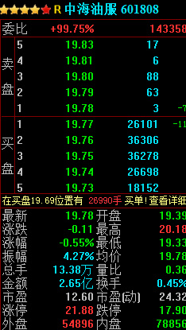

4.13 委比 • 实时计算委比
最近几个交易日，大盘又是一片惨淡，然而我们发现郭嘉队并没有猛拉指数，转而是对部分股票托底。比如中海油服：

风格的转变，意味着郭嘉队转攻为守，让我们看看都有哪些股票值得郭嘉队托底
# 常量准备
import pandas as pd
from datetime import datetime as dt
from pandas import DataFrame, Series
today = dt.today().strftime('%Y%m%d') # 获得今天的日期
# DataAPI取所有A股
stocks = DataAPI.EquGet(equTypeCD='A',listStatusCD='L',field='secID,nonrestfloatA',pandas="1")
universe = stocks['secID'].tolist() # 转变为list格式，以便和DataAPI中的格式符合
# 取所有A股的最新行情
bidask_fields = ['bidBook_volume%s' %i for i in xrange(1, 6)] + ['askBook_volume%s' %i for i in xrange(1, 6)]
fields = ['shortNM','lastPrice','bidBook','askBook','suspension']
def get_data():
data = DataFrame()
for i in range(0,len(universe),300): # 原则上可以性取完的，但是试验中作者发现会报错，估计是运算量太大，所以这里分批次取，每次300个
t = DataAPI.MktTickRTSnapshotGet(securityID=universe[i:min(i+300,len(universe))],field=fields,pandas="1")
tmp = DataFrame()
tmp['secID'] = t['ticker']+'.'+t['exchangeCD']
tmp[['shortNM','suspension'] + bidask_fields] =t[['shortNM', 'suspension']+bidask_fields]
data = pd.concat([data,tmp],axis=0) # 数据拼接
# 去掉当日停牌的股票
data['nonrestfloatA'] = stocks['nonrestfloatA']
data = data[data['suspension']==0]
data = data[(data['bidBook_volume1']>0).values & (data['askBook_volume1']>0).values]
# 去掉没有涨停板的股票
data['bidBook_volume'] = sum([data['bidBook_volume%s' %i] for i in xrange(1,6)])
data['askBook_volume'] = sum([data['askBook_volume%s' %i] for i in xrange(1,6)])
# 计算委比
data['rate'] = data['bidBook_volume']/(data['askBook_volume']+data['bidBook_volume'])*100 #百分之几
data = data.sort(columns='rate',ascending=False).reset_index()
data.drop('index',axis=1,inplace=True)
# 重命名
data = data[['secID', 'shortNM', 'bidBook_volume', 'askBook_volume', 'rate']]
data.columns = ['代码','简称','买量','卖量','委比']
return data
get_data().head(50)
| 代码 | 简称 | 买量 | 卖量 | 委比 | |
|---|---|---|---|---|---|
| 0 | 601336.XSHG | 新华保险 | 14310780 | 24700 | 99.827700 |
| 1 | 600485.XSHG | 信威集团 | 2086200 | 4100 | 99.803856 |
| 2 | 600188.XSHG | 兖州煤业 | 38015538 | 98746 | 99.740921 |
| 3 | 601808.XSHG | 中海油服 | 16845821 | 44700 | 99.735355 |
| 4 | 600362.XSHG | 江西铜业 | 20343390 | 56935 | 99.720911 |
| 5 | 600958.XSHG | 东方证券 | 4069182 | 12972 | 99.682227 |
| 6 | 600340.XSHG | 华夏幸福 | 12797790 | 54800 | 99.573627 |
| 7 | 000951.XSHE | 中国重汽 | 1964684 | 9600 | 99.513748 |
| 8 | 002304.XSHE | 洋河股份 | 2943430 | 15200 | 99.486249 |
| 9 | 600276.XSHG | 恒瑞医药 | 2230015 | 12500 | 99.442590 |
| 10 | 000538.XSHE | 云南白药 | 1798287 | 10200 | 99.435993 |
| 11 | 002143.XSHE | 印纪传媒 | 2813406 | 16335 | 99.422739 |
| 12 | 000800.XSHE | 一汽轿车 | 9174799 | 56199 | 99.391193 |
| 13 | 601958.XSHG | 金钼股份 | 20460168 | 127809 | 99.379206 |
| 14 | 000513.XSHE | 丽珠集团 | 881306 | 5600 | 99.368591 |
| 15 | 603288.XSHG | 海天味业 | 6049140 | 39340 | 99.353862 |
| 16 | 300202.XSHE | 聚龙股份 | 1145291 | 7600 | 99.340788 |
| 17 | 601800.XSHG | 中国交建 | 29915478 | 208100 | 99.309179 |
| 18 | 600403.XSHG | 大有能源 | 8768385 | 61500 | 99.303502 |
| 19 | 601225.XSHG | 陕西煤业 | 57038023 | 406943 | 99.291595 |
| 20 | 601098.XSHG | 中南传媒 | 7902047 | 58400 | 99.266373 |
| 21 | 601226.XSHG | 华电重工 | 4604601 | 35200 | 99.241347 |
| 22 | 600600.XSHG | 青岛啤酒 | 1887900 | 15673 | 99.176654 |
| 23 | 601688.XSHG | 华泰证券 | 11673583 | 97299 | 99.173392 |
| 24 | 000895.XSHE | 双汇发展 | 17718527 | 154080 | 99.137899 |
| 25 | 601555.XSHG | 东吴证券 | 14508868 | 127897 | 99.126194 |
| 26 | 300003.XSHE | 乐普医疗 | 2355404 | 20971 | 99.117521 |
| 27 | 600429.XSHG | 三元股份 | 6761469 | 61600 | 99.097180 |
| 28 | 000333.XSHE | 美的集团 | 9583724 | 89633 | 99.073403 |
| 29 | 600004.XSHG | 白云机场 | 3333050 | 32000 | 99.049048 |
| 30 | 600637.XSHG | 东方明珠 | 2020400 | 19420 | 99.047955 |
| 31 | 600741.XSHG | 华域汽车 | 15412841 | 150590 | 99.032411 |
| 32 | 600166.XSHG | 福田汽车 | 14485200 | 146445 | 98.999121 |
| 33 | 002594.XSHE | 比亚迪 | 2961400 | 29967 | 98.998217 |
| 34 | 000750.XSHE | 国海证券 | 13826732 | 146800 | 98.949442 |
| 35 | 600664.XSHG | 哈药股份 | 7654217 | 81506 | 98.946369 |
| 36 | 601186.XSHG | 中国铁建 | 24479602 | 265911 | 98.925417 |
| 37 | 600519.XSHG | 贵州茅台 | 894254 | 9741 | 98.922450 |
| 38 | 601901.XSHG | 方正证券 | 11906346 | 132861 | 98.896431 |
| 39 | 002081.XSHE | 金 螳 螂 | 6156885 | 69107 | 98.890024 |
| 40 | 600660.XSHG | 福耀玻璃 | 3706300 | 44600 | 98.810952 |
| 41 | 000869.XSHE | 张 裕Ａ | 3073749 | 37483 | 98.795236 |
| 42 | 002431.XSHE | 棕榈园林 | 1556637 | 19100 | 98.787869 |
| 43 | 002221.XSHE | 东华能源 | 2483500 | 30600 | 98.782865 |
| 44 | 000685.XSHE | 中山公用 | 8005948 | 100200 | 98.763901 |
| 45 | 002122.XSHE | 天马股份 | 5874886 | 74210 | 98.752584 |
| 46 | 000600.XSHE | 建投能源 | 8612256 | 109140 | 98.748595 |
| 47 | 002663.XSHE | 普邦园林 | 7862104 | 101141 | 98.729902 |
| 48 | 600823.XSHG | 世茂股份 | 7544949 | 97251 | 98.727448 |
| 49 | 002252.XSHE | 上海莱士 | 1819900 | 23600 | 98.719826 |
可以看到里面不乏贵州茅台，美的集团，张裕A等十几倍市盈率的现金牛企业。这也就反映了个股正处在严重两极分化的过程，郭嘉队和主力更亲睐于优质蓝筹。
由于这里计算委比时，只是针对买卖五档行情，所以有一定的失真，而且在行情软件上按照委比排序，效果更直观。那为什么还要搞得这么复杂呢？
因为不想错过发生过的委比结果，因为还想对当天整个的委比情况做分析。
下面的代码通过一个while循环，每隔10秒打印一次委比前30的股票名称：
import time
import datetime
full_data = DataFrame()
while 1:
now = datetime.datetime.now()
if now.hour>=15:
break
data = DataFrame()
time_str = '%2s%2s%2s' %(now.hour, now.minute, now.second)
try:
data = get_data()[:30]
data['time'] = time_str
except Exception,e:
print e
if data.empty:
continue
full_data = full_data.append(data)
print now, ', '.join([ e for e in data['简称'].values])
time.sleep(10)
2015-08-03 14:01:36.452456 广发证券, 张 裕Ａ, 江铃汽车, 比亚迪, 兖州煤业, 云南白药, 海天味业, 信威集团, 东华能源, 中集集团, 美邦服饰, 万华化学, 华电国际, 申万宏源, 陕国投Ａ, 环旭电子, 华域汽车, 一汽轿车, 哈药股份, 陕西煤业, 聚龙股份, 日出东方, 誉衡药业, 格力电器, 深圳燃气, 徐工机械, 新 和 成, 建投能源, 康恩贝, 驰宏锌锗
2015-08-03 14:01:48.711193 广发证券, 兖州煤业, 张 裕Ａ, 江铃汽车, 云南白药, 中集集团, 海天味业, 格力电器, 中国西电, 比亚迪, 贵人鸟, 美邦服饰, 东华能源, 万华化学, 哈药股份, 华电国际, 申万宏源, 贵州茅台, 陕国投Ａ, 华域汽车, 陕西煤业, 日出东方, 誉衡药业, 聚龙股份, 新 和 成, 深圳燃气, 建投能源, 驰宏锌锗, 一汽轿车, 国海证券
2015-08-03 14:02:01.886604 广发证券, 兖州煤业, 张 裕Ａ, 中集集团, 东吴证券, 江铃汽车, 华电国际, 海天味业, 云南白药, 中国西电, 万华化学, 申万宏源, 国海证券, 比亚迪, 东华能源, 互动娱乐, 哈药股份, 日出东方, 华域汽车, 环旭电子, 双汇发展, 誉衡药业, 格力电器, 陕国投Ａ, 深圳燃气, 东方能源, 新 和 成, 一汽轿车, 驰宏锌锗, 聚龙股份
2015-08-03 14:02:12.446392 中集集团, 广发证券, 云南白药, 兖州煤业, 张 裕Ａ, 东吴证券, 江铃汽车, 丽珠集团, 信威集团, 金 融 街, 海天味业, 华电国际, 双汇发展, 互动娱乐, 哈药股份, 万华化学, 上海医药, 华域汽车, 新华保险, 日出东方, 国海证券, 贵人鸟, 冠农股份, 申万宏源, 驰宏锌锗, 誉衡药业, 深圳燃气, 上海莱士, 徐工机械, 一汽轿车
2015-08-03 14:02:25.053561 张 裕Ａ, 云南白药, 中集集团, 东吴证券, 兖州煤业, 广发证券, 丽珠集团, 首航节能, 双汇发展, 金 融 街, 海天味业, 万华化学, 华电国际, 东方能源, 互动娱乐, 哈药股份, 日出东方, 中煤能源, 上海医药, 环旭电子, 华域汽车, 国海证券, 誉衡药业, 申万宏源, 贝因美, 深圳燃气, 聚龙股份, 浙大网新, 一汽轿车, 上海莱士
2015-08-03 14:02:36.258301 中集集团, 张 裕Ａ, 云南白药, 兖州煤业, 广发证券, 万华化学, 丽珠集团, 海天味业, 中文传媒, 互动娱乐, 中国西电, 一汽轿车, 东华能源, 哈药股份, 东吴证券, 华电国际, 格力电器, 金 融 街, 日出东方, 华域汽车, 国海证券, 誉衡药业, 申万宏源, 深圳燃气, 科力远, 陕国投Ａ, 二三四五, 上海莱士, 粤电力Ａ, 驰宏锌锗
2015-08-03 14:02:46.940336 中集集团, 张 裕Ａ, 云南白药, 兖州煤业, 中文传媒, 广发证券, 万华化学, 丽珠集团, 贵州茅台, 尚荣医疗, 日出东方, 一汽轿车, 东吴证券, 东方能源, 康恩贝, 哈药股份, 金 融 街, 海天味业, 中国神华, 华域汽车, 中国西电, 互动娱乐, 誉衡药业, 上海医药, 闰土股份, 申万宏源, 深圳燃气, 科力远, 聚龙股份, 二三四五
---------------------------------------------------------------------------
KeyboardInterrupt Traceback (most recent call last)
<mercury-input-27-f8d02897ce95> in <module>()
24 print now, ', '.join([ e for e in data['简称'].values])
25
---> 26 time.sleep(10)
27
KeyboardInterrupt:
本贴的实现参考于社区高人 @明轩 @jiang.wei 的涨停板帖子。